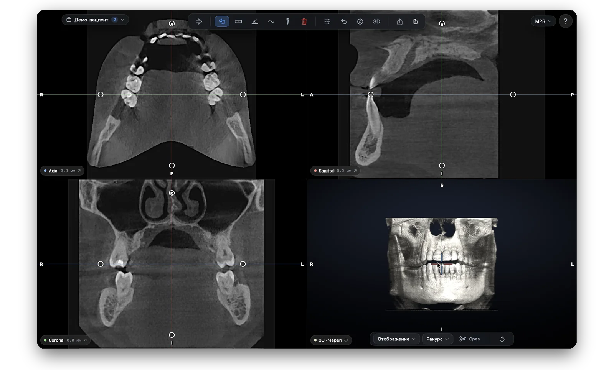

Три проекции и объёмный 3D
Axial, Sagittal и Coronal синхронны — перекрестие связывает все окна. Четвёртое окно — 3D-реконструкция с разными масками.
- Классический MPR для привычной работы
- Стороны подписаны — R/L, верх/низ, ориентация всегда понятна

Панорама прямо из КЛКТ
Панорама, как ОПТГ, строится вдоль зубной дуги: программа сама ведёт кривую по зубному ряду.
- Привычный вид снимка — но из данных КЛКТ

Разметка канала и «безопасный имплант»
Нижнечелюстной канал размечается в пару кликов — авто-трассировка сама проведёт линию. Расстояние от импланта до стенки канала видно сразу.
- Авто-трассировка канала и ручная коррекция
- Библиотека имплантов Ø3.5–4.5 × 8–14 мм с 3D-моделью

Отчёт в PDF в один клик
Готовый отчёт для пациента или коллеги: данные пациента, проекции, панорама и таблицы измерений.
- Отчёт по конкретному зубу (серия срезов) или по выбранной проекции
- Таблицы измерений, имплантов и разметки канала